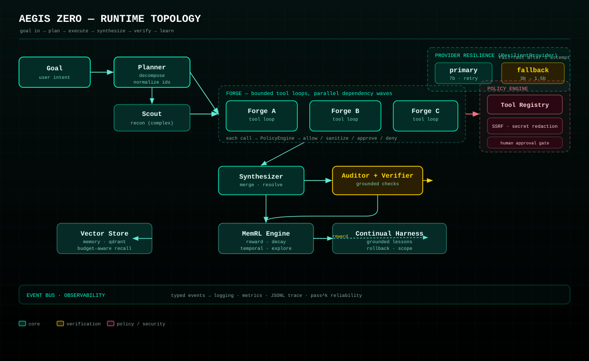

Async orchestration. Policy-governed tools. Memory that learns. Verification before trust. Nothing executes unreviewed.
Every claim here is backed by a test or a cited source. The audit reproduces defects before fixing them; the roadmap grades evidence before adopting it.
Every tool call passes a policy engine: allow, sanitize, approve, or deny. SSRF and destructive commands are blocked; secrets are redacted before a tool or a log ever sees them.
Recollections are scored by whether they helped. Winners surface; losers decay. Stale or contradicted facts are tombstoned when a verifier proves them false.
Specific exceptions with structured context. Hard budgets. And an auditor grounded in external checks — because the model grading its own answer doesn't work.
Independent subtasks run as parallel dependency waves. Each forge loop is policy-gated; the auditor is forced by deterministic checks.

try/except around the toolWe hold ourselves to the roadmap's measurement bar: fixed held-out set, fixed seeds, pass^k alongside pass@1, and an honest baseline. No claim without it.
Auditor forced by deterministic external checks — schema, execution, arithmetic, citation, tool-consistency — not the model grading itself.
Prompt budget derived from each model's own window (audit #13). No more one global constant wrong for every model.
Aegis.reliability() runs a goal n times, reports pass@k with a 95% Wilson interval and mean cost per run.
ResilientProvider drops to a smaller fallback after one failed primary attempt instead of burning slow retries on an OOMing 7b.
Stale and contradicted facts tombstoned, not deleted — reversible and auditable.
Every memory in a successful run is still rewarded, including irrelevant ones. Needs per-memory attribution.
Not a security boundary — a shell expresses the same command infinitely many ways. Containment is the honest fix.
Deliberately left out, with the evidence in the roadmap. Gains vanish against a well-tuned single agent given the same budget.
# install (Python 3.11+) — only httpx + PyYAML required at runtime pip install -e ".[dev]" # run a goal aegis run "Summarise the CAP theorem" --stats -v # report reliability: pass^k over n runs aegis reliability "Deploy the service" -n 5 -k 3 # in code import asyncio from aegis_zero import build_agent from aegis_zero.tools import ConsoleGate async def main(): async with build_agent(approval=ConsoleGate()) as agent: result = await agent.ask("What is 2^16, and why does it matter?") print(result.answer) asyncio.run(main())